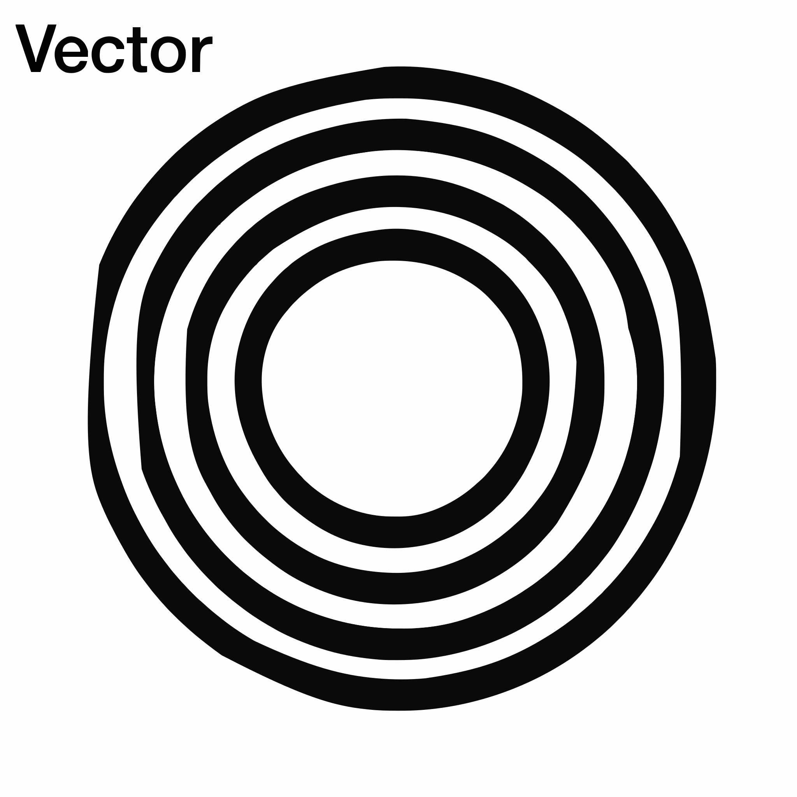

<audio controls>
  <source src="audio.mp3" type="audio/mpeg">
</audio>

<video width="320" height="240" controls>
  <source src="video.mp4" type="video/mp4">
</video>

<iframe width="560" height="315"
  src="https://www.youtube.com/embed/Jnwu4ZhB0ac"
  title="YouTube video player"
  frameborder="0"
  allow="accelerometer; autoplay; clipboard-write; encrypted-media; gyroscope; picture-in-picture; web-share"
  referrerpolicy="strict-origin-when-cross-origin"
  allowfullscreen>
</iframe>
